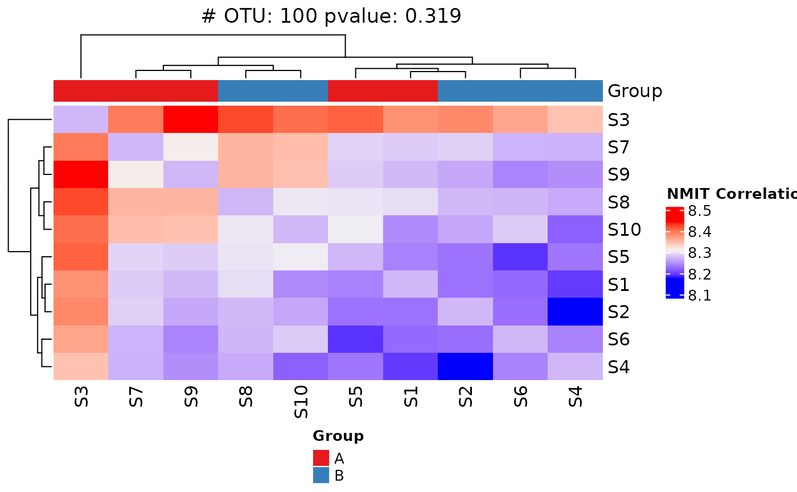

Nonparametric Microbial Interdependence Test (NMIT)
NMIT.RdThe package performs a multivariate distance-based test for group comparisons of microbial temporal interdependence. The NMIT test provides a comprehensive way to evaluate the association between key phenotypic variables and microbial interdependence. This function is intended for use after a filtering step.
Usage
NMIT(
dat,
unit_var,
fixed_cov,
covariate_time,
method = "kendall",
dist_type = "F",
heatmap = TRUE,
classify = FALSE,
fill_na = 0
)Arguments
- dat
A
MultiAssayExperimentobject specially formatted as an animalcules output.- unit_var
a numeric vector of subject.
- fixed_cov
A character vector of covariates of interest found in dat.
- covariate_time
Character string giving the name of the discrete time-based covariate in the metadata to group abundances by.
- method
an option of the correlation method ("pearson", "kendall", "spearman"). The default method is "kendall".
- dist_type
A character strin specifying the type of matrix norm to be computed. The default is
"F"."M"or"m"specifies the maximum modulus of all the elements inx."O","o"or"1"specifies the one norm, (maximum absolute column sum);"I"or"i"specifies the infinity norm (maximum absolute row sum);"F"or"f"specifies the Frobenius norm (the Euclidean norm ofxtreated as if it were a vector); and
- heatmap
A logical value indicating whether to draw heatmap. The default is
TRUE.- classify
A logical value indicating whether to draw a classifier tree. The default is
FALSE.- fill_na
A number between 0 and 1 to fill
NAvalues. The default value is 0.
Value
This function returns an analysis of variance (ANOVA) table showing sources of variation, degrees of freedom, sequential sums of squares, mean squares, F statistics, partial R-squared and P values, based on 999 permutations.
Examples
dat <- system.file("extdata/MAE_small.RDS", package = "LegATo") |> readRDS()
NMIT(dat, unit_var = "Subject", fixed_cov = "Group", covariate_time = "Month")
